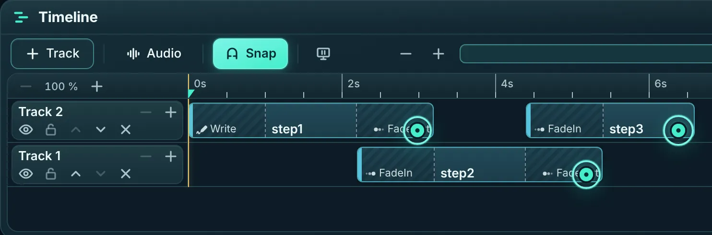
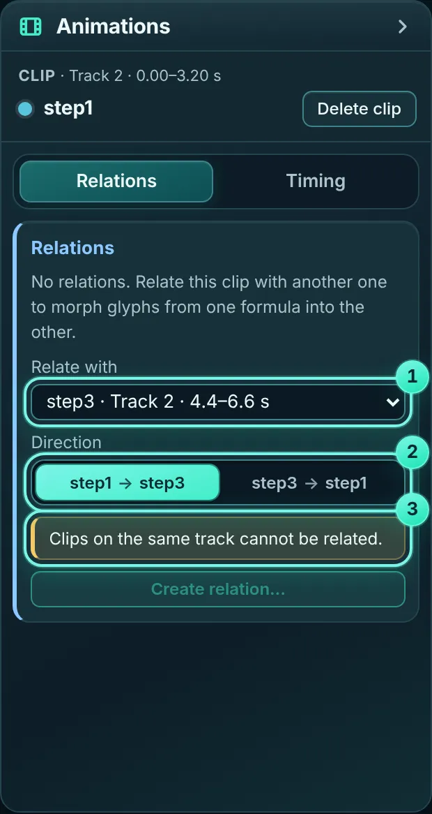
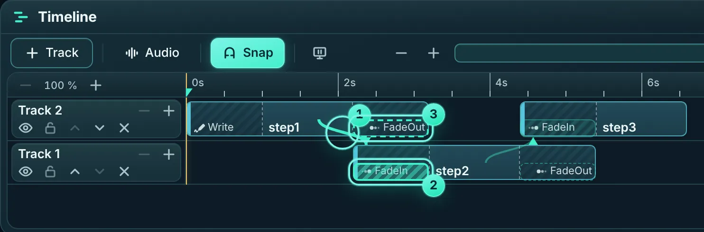
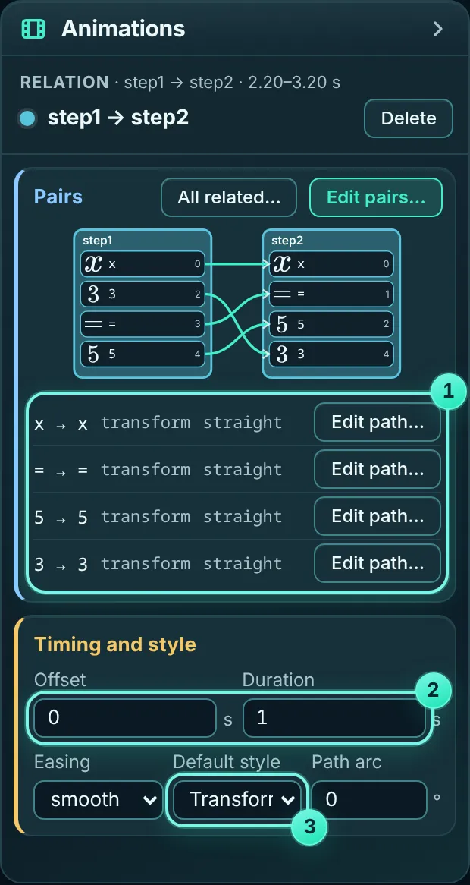
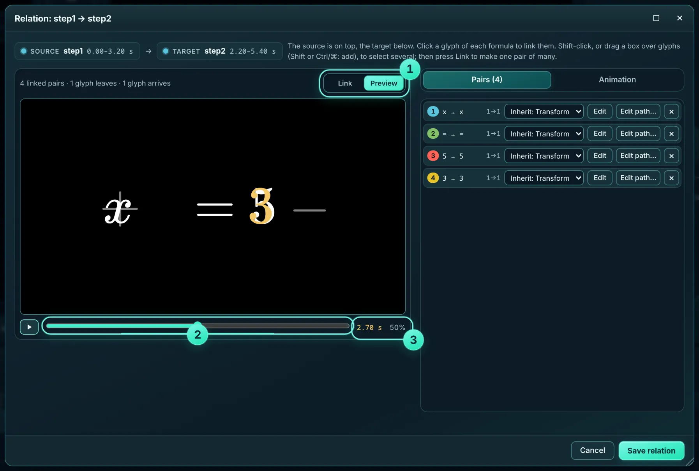

Transforming one formula into another
A transformation is the basic move of the editor: one formula turns into the next, and each glyph travels to its new place. You make one by relating two clips on the timeline.
How a transformation works
A formula is a set of glyphs, the symbols the editor draws: x + 3 = 5
has five. A transformation sends the glyphs of one formula to the glyphs of the next. You say
which goes where, and the editor animates the journey: the 3 of
x + 3 = 5 slides across to become the 3 of x = 5 − 3.
On the timeline a transformation is a relation between two clips.
- The source is the clip of the formula that turns into another one.
- The target is the clip of the formula it becomes.
- A relation holds pairs. Each pair links glyphs of the source to glyphs of the
target:
xtox,3to3. - The window is the stretch of time in which the glyphs travel.
A glyph that no pair takes does not travel. A glyph of the source that is in no pair leaves
with the outro of the source clip. A glyph of the target that is in no pair
enters with the intro of the target clip. In the example above the
+ fades out and the − fades in.
Here is the same scene without the relations, and with them. Without them the formulas cross-fade. With them the glyphs travel.
Here are the pairs of the first relation. Click a glyph of the top formula and then a glyph of the bottom one to link them yourself, and press Preview to see your transformation.
What a relation needs
A relation needs two clips that
- are on different tracks, and
- overlap in time: for a stretch, the source is still on screen (after its intro) while the target already is (before its outro).
The scene of this page has three clips of three formulas, step1,
step2 and step3. They alternate between two tracks, and each overlaps the next
by one second. You relate step1 to step2, and then step2 to
step3. step1 and step3 are on the same track, so they cannot be related
to each other.
There are two ways to start a relation.
With the pointer. Hold Shift: a round link port appears at the lower right of each clip. Click the port of the source clip, then click the target clip (or drag from the port onto it).

From the Animations panel. Select the source clip. In the Relations tab, choose the other clip in Relate with (1), pick the direction (2) and press Create relation…. This route works from the keyboard too. When the two clips cannot be related, the panel says why (3).

step3 for step1: Clips on the same track cannot be
related. The button stays off.When the clips do not overlap, the notice reads The clips must overlap in time: the source must still be on screen (after its intro) while the target is (before its outro).
Making one
Open the project before the relations with File ▸ Open…: press Other file… in the dialog and pick the downloaded file (Projects and files explains the dialog). Then relate its three clips.
Link the rest by hand. Click the 5 of the source, then Shift-click the
− and the 3. Then click the 2 of the target: the three
source glyphs are linked to it in one pair. In the list of pairs, set this pair's style to
Fade transform, so that the three glyphs fade into the 2
instead of twisting into its shape. Press Save relation.
5, Shift-click − and
3, then click 2.A pair has one of four styles. The relation has a default, and each pair can have its own.
| Style | What the glyphs do |
|---|---|
| Transform | The source glyphs turn into the target glyphs and are gone from where they were. |
| Copy (source stays) | A copy of the source glyphs travels to the target glyphs. The source glyphs stay where they are. |
| Fade transform | The source glyphs fade out as they move and resize onto the target glyphs, which fade in from the place of the source. |
| Fade copy (source stays) | A copy of the source glyphs fades into the target glyphs. The source glyphs stay where they are. |
Here is the second relation played with each style, side by side. Watch what the source glyphs do and what happens to the target.
Try the pair that no label can suggest, in the widget below. It starts with no pairs: press
Suggest links by label and accept them, which links the x and the
=. Then link the 5, the − and the 3 to the
2, and press Preview.
Your two relations make the scene of First transform, the example at the top of this page.
Timing: the window
A relation's window is, by default, one second long, and it sits where the two clips overlap: it starts where the playhead is when a window fits there, and otherwise as soon as both clips allow. On the timeline a relation is drawn as an arrow from the source clip to the target clip (1), a band on the target clip, the window (2), and a dashed outline on the source clip (3), where the glyphs are taken from.

Click the band to select the relation. The Animations panel then shows its pairs, and its timing: Offset is where the window starts, counted from the start of the target clip, and Duration is how long it lasts. You can also drag the band to move the window, or its edges to make it longer or shorter.

The window cannot leave the stretch where both clips are on screen: it starts after the intro of the source, and it ends before the source ends and before the outro of the target begins. Drag the window in the widget to see it.
Playing it back
You can see a relation in three places.
- In the relation editor, switch from Link to Preview. The two formulas alone play the transformation in a loop, from a little before the window to a little after it, with the pairs as they stand now, before you save anything.
- In the Preview of the editor: put the playhead before the window and press Space.
- With Preview raw, the last key of the editor's toolbar: the glyphs go from one formula to the other in straight lines, as the pairs and styles say.

To change a relation later, double-click its band, or right-click it and choose Edit pairs…. Delete relation is in the same menu. After a relation is saved, Ctrl+Z takes back the whole editing session at once.
Where to go next
- How relations work goes through every kind of pair, the styles and what unpaired glyphs do.
- The relation editor covers linking, the pair list and the Animation tab.
- Previewing a transformation has Preview and Preview raw in detail.
- Transformation recipes shows the moves of algebra: moving a term, cancelling, expanding.
- Your first animation builds a transformation from an empty project, step by step.